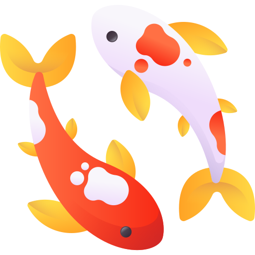

Larissa Yee

Hi! I’m Larissa, a senior at UC Berkeley studying Computer Science, Cognitive Science, and Music.
I’m passionate about building human-centered technology - technology grounded in compassion, with an understanding of how we learn, think, and behave.
I've built systems and models across software engineering and machine learning - from automating HBO Max system health reports at Warner Bros. Discovery,
to improving content discovery and personalization at CNN,
to developing a customer segmenation model for Verizon as an AI & ML Fellow at Cornell Tech’s Break Through Tech AI Program.
In my free time, you can find me playing the violin with the
UC Berkeley Symphony Orchestra,
experimenting in the kitchen for my
cooking Instagram account,
running around Berkeley, or capturing memories with my
camera.
Thank you for stopping by! I'd love to connect.